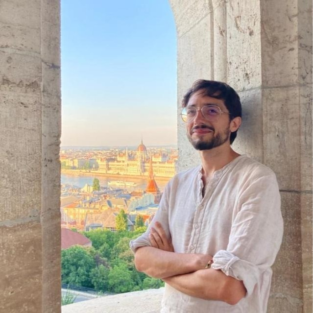

Profilo
Andrea Novellis è un politologo che studia guerre civili, governance ribelle e ordini politici nelle società segnate dal conflitto. La sua ricerca combina lavoro sul campo e analisi comparata su Kurdistan, Sri Lanka e Medio Oriente.
Il suo lavoro collega ricerca accademica e policy su allerta precoce, rischio politico e politica internazionale della sicurezza alimentare.
Incarichi e affiliazioni
- Research Fellow, ITALIM: L’Italia e la politica internazionale della sicurezza alimentare, Università di Napoli “L’Orientale”.
- Associate Member, Center on the International Politics of Food Security (CIPFS).
- Non-Resident Research Fellow, Civil War Paths, University of York.
Attività scientifica selezionata
- Co-editor di un numero speciale di prossima pubblicazione su “Informality and Global Political Orders,” Cambridge Review of International Affairs.
- Membro dell’Academic Advisory Board, Vienna Kurdish Studies Yearbook.
- Co-editor di “Exploring the Kurdish Movement,” Partecipazione e Conflitto.
Didattica e finanziamenti
Course Instructor presso il Bandaranaike Centre for International Studies di Colombo. Principal proposal writer per ITALIM, progetto interuniversitario finanziato dal Ministero degli Affari Esteri e della Cooperazione Internazionale.